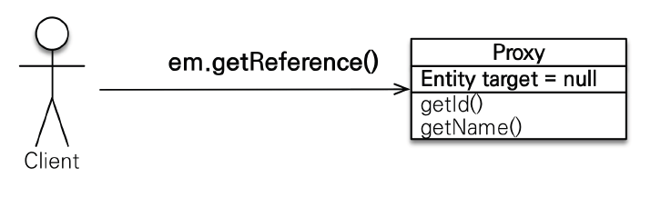

[JPA] 자바 ORM 표준 JPA 프로그래밍 - 기본편 (고급매핑, 프록시와 연관관계 관리)
고급매핑
1. 상속관계 매핑
- 관계형 데이터베이스는 상속 관계 X (객체는 상속관계가 있음)
- 슈퍼타입 서브타입 관계라는 모델링 기법이 객체 상속과 유사
- 상속관계 매핑 : 객체의 상속 구조와 DB의 슈퍼타입, 서브타입 관계를 매핑
- 슈퍼타입 논리 모델을 실제 물리 모델로 구현하는 방법
- 각각 테이블로 변환 -> 조인 전략

- 앨범 데이터를 추가하면 ITEM과 ALBUM에 insert가 된다. (즉, insert 2번)
- ITEM 테이블의 DTYPE를 통해 어느 테이블과 조인할지 구분 가능
- 통합 테이블로 변환 -> 단일 테이블 전략

- DTYPE을 통해 Album, Movie, Book중 무엇인지 구분 가능
- 서브타입 테이블로 변환 -> 구현 클래스마다 테이블 전략

- 주요 어노테이션
- @Inheritance(strategy = InheritanceType.XXX)
- JOINED : 조인전략
- SINGLE_TABLE : 단일 테이블 전략
- TABLE_PER_CLASS : 구현 클래스마다 테이블 전략
- @DiscriminatorColumn(name=“DTYPE”)
- @DiscriminatorValue(“XXX”)
@Entity
@Inheritance(strategy = InheritanceType.JOINED) //JOINED를 SINGLE_TABLE로 바꾸면 단일 테이블 전략
@DiscriminatorColumn // (name = "DIS_TYPE)을 적으면 컬럼명 바꾸기 가능
//단일 테이블 전략은 @DiscriminatorColumn 안써도 자동으로 DTYPE 생성됨(한 테이블에 들어가있기때문에 DTYPE이 없으면 뭔지 알수없다.)
public abstract class Item {
@Id @GeneratedValue
private Long id;
private String name;
private int price;
}
- JPA의 장점 : 조인 테이블 전략으로 개발하다가 단일 테이블 전략으로 바꿔야 할 경우 @Inheritance 어노테이션만 수정하면 된다
@Entity
@DiscriminatorValue("A")
public class Album extends Item{
private String artist;
}
public class JpaMain {
public static void main(String[] args) {
EntityManagerFactory emf = Persistence.createEntityManagerFactory("hello");
EntityManager em = emf.createEntityManager();
EntityTransaction tx = em.getTransaction();
tx.begin();
try {
Movie movie = new Movie();
movie.setDirector("aaaa");
movie.setActor("bbbb");
movie.setName("바람");
movie.setPrice(10000);
em.persist(movie);//(조인 전략 사용시 insert 두번, 단일테이블 전략 사용시 insert 한번)
em.flush();
em.clear(); //영속성 컨텍스트 제거, 1차 캐시 비움
Movie findMovie = em.find(Movie.class, movie.getId()); //실행시 콘솔에 쿼리가 나온다. (조인 전략은 조인 사용)
System.out.println("findMovie = " + findMovie);
tx.commit();
}catch (Exception e){
tx.rollback();
}finally {
em.close();
}
emf.close();
}
}
조인 전략 실행결과

ITEM 테이블과 MOVIE 테이블의 ID는 똑같다. (ITEM의 ID는 PK, MOVIE의 ID는 PK,FK)
DTYPE의 M은 Movie (@DiscriminatorValue을 사용)
- 장점
- 테이블 정규화
- 외래 키 참조 무결성 제약조건 활용가능 (ITEM_ID 사용, 설계가 깔끔해짐)
- 저장공간 효율화 (정규화가 되어있기 때문에)
- 단점
- 조회시 조인을 많이 사용, 성능 저하 (조인을 잘 하면 성능저하 크게 발생 안함, 저장공간이 효율화 되어있기 때문에 오히려 성능이 잘 나올수도 있다)
- 조회 쿼리가 복잡함
- 데이터 저장시 INSERT SQL 2번 호출
- 조인전략이 정석이라고 생각하면 된다.
- 객체와도 잘 맞고 정규화도 되고 깔끔하게 설계 가능
- 단일 테이블에 비해서는 복잡하다
단일 테이블 전략 실행결과

- 장점
- 조인이 필요 없으므로 일반적으로 조회 성능이 빠름
- 조회 쿼리가 단순함
- 단점
- 자식 엔티티가 매핑한 컬럼은 모두 null 허용 (데이터 무결성 입장애서는 애매한게 있다)
- 단일 테이블에 모든 것을 저장하므로 테이블이 커질 수 있다. 상황에 따라서 조회 성능이 오히려 느려질 수 있다. (웬만해서는 임계점을 넘을 경우가 거의 없다.)
구현 클래스마다 테이블 전략 결과

ITEM 테이블은 안만들어진다.
구분할 필요가 없기 때문에 DTYPE도 안만들어진다.
쿼리도 심플하게 들어가서 좋은것 같지만 데이터를 찾을때 큰 문제 발생.
ex) ITEM_ID만 알 경우, 모든 테이블에서 찾아서(select시 union 사용) 매우 비효율적이다.
- 이 전략은 DB 설계자와 ORM 전문가 둘 다 추천 X
- 장점
- 서브 타입을 명확하게 구분해서 처리할 때 효과적
- not null 제약조건 사용 가능
- 단점
- 여러 자식 테이블을 함께 조회할 때 성능이 느림(UNION SQL 필요)
- 자식 테이블을 통합해서 쿼리하기 어려움
- 테이블이 묶이는게 없기 때문에 전부 다 조회해야함
- 새로운 타입을 추가할때 변경할게 굉장히 많아진다.
- 이 전략을 사용할 경우 먼 미래에 언젠가는 큰 후회를 한다.
언제 뭘 사용할까?
- 보통 조인 전략을 선택, 엄청 단순하고 확장할 일도 없을 경우 단일테이블 전략 선택
2. Mapped Superclass - 매핑 정보 상속
- 공통 매핑 정보가 필요할 때 사용(id, name)
ex) 객체 입장에서 id, name 필드가 계속 나올 때, 클래스 만들때 마다 id, name 필드를 생성하기 귀찮으니까 부모 클래스에 두고 속성만 상속해서 사용하고 싶은경우
DB는 완전히 다른데, 객체 입장에서 속성만 상속받아서 쓰고싶은 경우
즉, 귀찮아서 귀찮음을 줄일 때 사용

ex) 모든 테이블에서 누가, 언제 등록, 수정했는지에 대한 정보가 항상 있어야 할 경우
/*
private String createdBy;
private LocalDateTime createdDate;
private String lastModifiedBy;
private LocalDateTime lastModifiedDate;
MappedSuperclass를 사용하지 않으면 이 코드를 모든 테이블에 작성해야한다.*/
//MappedSuperclass를 사용하면 상속받아서 사용할 수 있다.
@MappedSuperclass //매핑 정보만 받는 부모 클래스
public abstract class BaseEntity {
//@Column(name = "INSERT_MEMBER") 컬럼 이름 변경시 사용
private String createdBy;
private LocalDateTime createdDate;
private String lastModifiedBy;
private LocalDateTime lastModifiedDate;
//getter setter 생략
}
@Entity
public class Member extends BaseEntity{
@Id @GeneratedValue
@Column(name = "MEMEBER_ID")
private Long id;
@Column(name = "USERNAME")
private String username;
}
//JpaMain의 try 내부 코드
try {
Member member = new Member();
member.setUsername("user1");
member.setCreatedBy("kim");
member.setCreatedDate(LocalDateTime.now());
em.persist(member);
tx.commit();
}
- 상속관계 매핑 X
- 엔티티 X, 테이블과 매핑 X(속성만 내려주는애)
- 부모 클래스를 상속 받는 자식 클래스에 매핑 정보만 제공
- 조회, 검색 불가 (em.find(BaseEntity.class) 불가능)
- 직접 생성해서 사용할 일이 없으므로 추상 클래스 권장
- 테이블과 관계 없고, 단순히 엔티티가 공통으로 사용하는 매핑 정보를 모으는 역할
- 주로 등록일, 수정일, 등록자, 수정자 같은 전체 엔티티에서 공통으로 적용하는 정보를 모을 때 사용
- 참고 : @Entity 클래스는 엔티티나 @MappedSuperclass로 지정한 클래스만 상속 가능 (JPA에서 extends를 사용할때)
- 실무에서 BaseEntity를 만들어서 활용하면 편리하다.
프록시와 연관관계 관리
1. 프록시
- 프록시 사용 이유?
- Memeber 테이블과 Team 테이블이 연관관계를 가질 때, 프록시를 사용하지 않아서 지연로딩을 사용할 수 없다면 Member를 JPA를 통해 조회할 때 연관관계인 Team까지 함께 조회된다.
여기서 문제가 되는 이유는 Member만 필요한데 연관관계인 Team까지 다 불러와서 메모리에 올라와있기 때문에 리소스 낭비가 생긴다.
만약 프록시를 사용하여 지연로딩이 가능해지면 Team을 지연로딩으로 처리하고(Team은 불러오지 않게 됨) Member만 불러올 수 있게된다.
이 과정에서 Team을 불러오지 않기 때문에 리소스의 낭비를 조금이라도 줄일 수 있다. 이러한 지연로딩이라는 기술을 가능케 하는게 프록시이다.
- 프록시의 기초
- em.find() vs em.getReference();
- em.find() : 데이터베이스를 통해서 실제 엔티티 객체 조회 (쿼리가 나감)
- em.getReference() : 데이터베이스 조회를 미루는 가짜(프록시) 엔티티 객체 조회 (쿼리가 안나감)

- 프록시 특징 1
- 실제 클래스를 상속 받아서 만들어짐
- 실제 클래스와 겉 모양이 같다.
- 사용하는 입장에서는 진짜 객체인지 프롤시 객체인지 구분하지 않고 사용하면 됨 (이론상)
- 프록시 객체는 실제 객체의 참조(target)를 보관
- 프록시 객체를 호출하면 프록시 객체는 실제 객체의 메소드 호출


- 프록시 객체의 초기화

try{
// Member findMember = em.find(Member.class, member.getId()); //쿼리 나감
Member findMember = em.getReference(Member.class, member.getId()); //getReference를 호출하는 시점에는 쿼리 안나감
System.out.println("findMember = " + findMember.getClass()); // 출력결과 : hellojpa.Member$HibernateProxy$odcVHpjy (Hibernate가 강제로 만든 가짜 클래스(프록시))
System.out.println("findMember.id = " + findMember.getId()); // 아직 쿼리 안나감, Reference를 찾을때 getId를 넣었기 때문에 즉, 이미 값이 있기 때문에 쿼리가 안나감
System.out.println("findMember.username = " + findMember.getUsername()); // 쿼리 나감, findMember에 값을 채워야 하기 때문에 쿼리가 나간다.
System.out.println("findMember.username = " + findMember.getUsername()); // 한번 더 호출 시, 바로 위에서 이미 초기화 되어있기 때문에 값만 출력됨
}
- 프록시 특징 2
- 프록시 객체는 처음 사용할 때 한 번만 초기화
- 프록시 객체를 초기화 할 때, 프록시 객체가 실제 엔티티로 바뀌는 것은 아님, 초기화되면 프록시 객체를 통해서 실제 엔티티에 접근 가능
- 프록시 객체는 원본 엔티티를 상속받음, 따라서 타입 체크시 주의해야함(==비교 실패, 대신 instance of 사용)
- 영속성 컨텍스트에 찾는 엔티티가 이미 있으면 em.getReference()를 호출해도 실제 엔티티 반환
- 영속성 컨텍스트의 도움을 받을 수 없는 준 영속 상태일 때, 프록시를 초기화하면 문제 발생 (Hibernate는 org.hibernate.LazyInitializationException 예외를 터트림)
Member findMember = em.getReference(Member.class, member.getId());
System.out.println("before findMember = " + findMember.getClass()); //출력결과 : hellojpa.Member$HibernateProxy$odcVHpjy
System.out.println("findMember.username = " + findMember.getUsername());
System.out.println("after findMember = " + findMember.getClass()); //출력결과 : hellojpa.Member$HibernateProxy$odcVHpjy
// 교체되는것이 아니라 프록시는 유지가 되고 내부의 타겟에만 값이 채워지는것이다.
//==========================================================================================================================
Member member1 = new Member();
member1.setUsername("member1");
em.persist(member1);
Member member2 = new Member();
member1.setUsername("member2");
em.persist(member2);
Member m1 = em.find(Member.class, member1.getId());
Member m2 = em.getReference(Member.class, member2.getId());
System.out.println("m1 == m2: " + (m1.getClass() == m2.getClass())); //false가 나온다.
logic(m1,m2);
//비즈니스 로직에서는 메소드로 파라미터만 넘어오기 때문에 프록시가 넘어오는지 실제로 넘어오는지 모르기 때문에 == 비교를 하면 안된다.
//ex
private static void logic(Member m1, Member m2){
//System.out.println("m1 == m2: " + (m1.getClass() == m2.getClass()));
System.out.println("m1 == m2: " + (m1 instanceof Member)); //true
System.out.println("m1 == m2: " + (m2 instanceof Member)); //true
}
//==========================================================================================================================
Member m1 = em.find(Member.class, member1.getId());
System.out.println("m1 = " + m1.getClass()); //출력결과 : hellojpa.Member
Member reference = em.getReference(Member.class, member1.getId());
System.out.println("reference = " + reference.getClass()); //출력결과 : hellojpa.Member
/* Reference를 했는데 프록시로 안나오는 이유
1. member를 이미 영속성 컨텍스트에 올려놨는데 굳이 프록시로 가져와봐야 이점이 없다.
2. JPA에서는 동일한 트랜잭션 내에서 엔티티의 동일성을 보장하기 때문에 타입 비교를 하면 true로 나온다.
*/
//==========================================================================================================================
Member m1 = em.getReference(Member.class, member1.getId());
System.out.println("m1 = " + m1.getClass()); //출력결과 : hellojpa.Member$HibernateProxy$mnqWhnB
Member reference = em.getReference(Member.class, member1.getId());
System.out.println("reference = " + reference.getClass()); //출력결과 : hellojpa.Member$HibernateProxy$mnqWhnB
System.out.println("m1 == reference: " + (m1 == reference)); // true
/* 같은 프록시가 반환된 이유?
동일한 트랜잭션 내에서 엔티티의 동일성 보장
*/
//==========================================================================================================================
Member refMember = em.getReference(Member.class, member1.getId());
System.out.println("refMember = " + refMember.getClass()); //출력결과 : hellojpa.Member$HibernateProxy$mnqWhnB
Member findMember = em.find(Member.class, member1.getId()); //실제 조회를 하기 때문에 쿼리 나감
System.out.println("findMember = " + findMember.getClass()); //출력결과 : hellojpa.Member$HibernateProxy$mnqWhnB
System.out.println("refMember == findMember: " + (refMember == findMember)); // true
/* find에서도 프록시가 반환된 이유?
동일한 트랜잭션 내에서 엔티티의 동일성 보장
*/
//===========================================================================================================================
Member refMember = em.getReference(Member.class, member1.getId());
System.out.println("refMember = " + refMember.getClass()); //프록시
//em.close //영속성 컨텍스트 종료
em.detach(refMember); //영속성 컨텍스트 관리 안함
//em.clear //영속성 컨텍스트가 초기화 되므로 똑같이 에러가 발생
refMember.getUsername(); //위의 3가지 모두 org.hibernate.LazyInitializationException 에러 발생
System.out.println("refMember = " + refMember.getUsername());
- 프록시든 아니든 개발에 문제가 없게 개발해야 된다.
- 실무에서 org.hibernate.LazyInitializationException이 많이 발생하므로 주의하자.
- 프록시 확인
- 프록시 인스턴스의 초기화 여부 확인
- PersistenceUnitUtil.isLoaded(Object entity)
- 프록시 클래스 확인 방법
- entity.getClass().getName() 출력(..javasist.. or HibernateProxy…)
- 프록시 강제 초기화
- org.hibernate.Hibernate.initialize(entity);
- 참고 : JPA 표준은 강제 초기화 없음
강제 호출 : member.getName();
Member refMember = em.getReference(Member.class, member1.getId());
System.out.println("refMember = " + refMember.getClass()); //프록시
System.out.println("isLoaded = " + emf.getPersistenceUnitUtil().isLoaded(refMember)); //출력 결과 : false
refMember.getUsername(); //강제 초기화
System.out.println("isLoaded = " + emf.getPersistenceUnitUtil().isLoaded(refMember)); //출력 결과 : true
Hibernate.initialize(refMember); //강제 초기화
2. 즉시 로딩과 지연 로딩
- 지연로딩 LAZY를 사용해서 프록시로 조회


@Entity
public class Member {
@Id @GeneratedValue
@Column(name = "MEMEBER_ID")
private Long id;
@Column(name = "USERNAME")
private String username;
@ManyToOne(fetch = FetchType.LAZY)
@JoinColumn(name = "TEAM_ID")
private Team team;
}
JpaMain의 try 내부
try{
Member m = em.find(Member.class, member1.getId());//Member만 가져옴
System.out.println("m = " + m.getTeam().getClass()); // 프록시로 나옴
m.getTeam().getName(); //이때 TEAM에 대한 쿼리가 나옴, 초기화
}
- Member와 Team을 자주 함께 사용한다면?
- LAZY를 사용하면 Member 따로 Team 따로 쿼리가 각각 나가서 성능상 손해를 본다.
- 즉시 로딩 EAGER를 사용해서 함께 조회


@Entity
public class Member {
@Id @GeneratedValue
@Column(name = "MEMEBER_ID")
private Long id;
@Column(name = "USERNAME")
private String username;
@ManyToOne(fetch = FetchType.EAGER)
@JoinColumn(name = "TEAM_ID")
private Team team;
}
JpaMain의 try 내부
try{
Member m = em.find(Member.class, member1.getId()); //조회를 할대 join을 사용해서 한방에 쿼리를 날림
System.out.println("m = " + m.getTeam().getClass()); // 프록시가 아닌 hellojpa.Team가 나옴
System.out.println("teamName = " + m.getTeam().getName()); //teamA
}
- 프록시와 즉시로딩 주의
- 가급적 지연 로딩만 사용(실무에서는 즉시 로딩 사용하면 안됨)
- 즉시 로딩을 적용하면 예상하지 못한 SQL이 발생
- 테이블이 여러개면 join도 여러개 나와서 성능이 저하되고 쿼리도 엄청 길게 나온다.
- 즉시 로딩은 JPQL에서 N+1 문제를 일으킨다.
- JPQL로 Member 조회할 경우, Member에 Team이 EAGER로 설정되어 있으면 Team도 같이 가져온다
- 최초 쿼리가 1개 나가고 추가로 N개의 쿼리가 나간다
- @ManyToOne, @OneToOne은 기본이 즉시 로딩 -> LAZY로 설정하자
- @OneToMany, @ManyToMany는 기본이 지연 로딩
- 실무에서는?
- 모든 연관관계에 지연 로딩으로 설정
- 실무에서 즉시 로딩 사용하지 말것!
- JPQL fetch join 사용 (데이터가 채워지기 때문에 루프를 돌려서 값을 출력해서 추가적인 쿼리가 안나간다.)
- 엔티티 그래프 기능 사용 (추후에 배울 내용)
- 배치사이즈 활용 (추후에 배울 내용)
3. 영속성 전이(CASCADE)와 고아 객체
- 영속성 전이 : CASCADE
- 특정 엔티티를 영속 상태로 만들 때 연관된 엔티티도 함께 영속 상태로 만들고 싶을 때
- 예 : 부모 엔티티를 저장할 때 자식 엔티티도 함께 저장
- 주의
- 영속성 전이는 연관관계 매핑하는 것과 아무 관련이 없다.
- 엔티티를 영속화할 때 연관된 엔티티도 함께 영속화하는 편리함을 제공할 뿐이다.
- CASCADE의 종류
- ALL : 모두 적용 (라이프사이클 전부 맞출 때)
- PERSIST : 영속 (저장할때만 라이프사이클 맞출 때)
- REMOVE : 삭제
- MERGE : 병합
- REFRESH : REFRESH
- DETACH : DETACH
- 쓰면 안되는 경우
- 소유자가 둘 이상일 때
- 완전히 종속적이지 않을 때
- 라이프사이클이 다를 때
@Entity
public class Parent {
@Id
@GeneratedValue
private Long id;
private String name;
@OneToMany(mappedBy = "parent", cascade = CascadeType.ALL, orphanRemoval = true)
private List<Child> childList = new ArrayList<>();
public void addChild(Child child){
childList.add(child);
child.setParent(this);
}
}
@Entity
public class Child {
@Id
@GeneratedValue
private Long id;
private String name;
@ManyToOne
@JoinColumn(name = "parent_id")
private Parent parent;
}
JpaMain의 try 내부
try{
Child child1 = new Child();
Child child2 = new Child();
Parent parent = new Parent();
parent.addChild(child1);
parent.addChild(child2);
em.persist(parent); //Parent의 CascadeType.All 때문에 child도 같이 persist된다.
}
- 고아객체
- 고아 객체 제거 : 부모 엔티티와 연관관계가 끊어진 자식 엔티티를 자동으로 삭제
- orphanRemoval = true (조심히 사용할것)
- Parent parent1 = em.find(Parent.class, id);
parent1.getChildren().remove(0);
자식 엔티티를 컬렉션에서 제거- DELETE FROM CHILD WHERE ID=? 쿼리가 나간다
- 주의
- 참조가 제거된 엔티티는 다른 곳에서 참조하지 않는 고아 객체로 보고 삭제하는 기능
- 참조하는 곳이 하나일 때 사용해야함
- 특정 엔티티가 개인 소유할 때 사용
- @OneToOne, @OneToMany만 가능
- 참고 : 개념적으로 부모를 제거하면 자식은 고아가 된다. 따라서 고아 객체 제거 기능을 활성화 하면, 부모를 제거할 때 자식도 함께 제거된다. 이것은 CascadeType.REMOVE처럼 동작한다.
- 영속성 전이 + 고아객체, 생명주기
- CascadeType.All + orphanRemoval=true
- 스스로 생명주기를 관리하는 엔티티는 em.persist()로 영속화, em.remove()로 제거
- 두 옵션을 모두 활성화 하면 부모 엔티티를 통해서 자식의 생명주기를 관리할 수 있음
- 도메인 주도 설계(DDD)의 Aggregate Root 개념을 구현할 때 유용
etc. 에러
Cannot drop "ITEM" because "FKF1UERPNMN49VL1SPBBPLGXAUN, FKABGE9EQALSPCEJIJ53RAT7PJH" depends on it; SQL statement:
drop table item [90107-200]
테이블을 드랍할 때 이런 오류가 발생 할 경우
pom.xml에서 hibernate 버전을 5.4.13.Final로 바꾸기
H2 데이터베이스 버전을 1.4.200로 바꾸기(재설치)
Quiz
문제 1. 조인 전략, 단일 테이블 전략보다 구현 클래스마다 테이블 전략을 사용하는게 더 편하고 좋다?
정답 확인
X
구현 클래스마다 테이블 전략은 DB 설계자와 ORM 전문가 둘 다 추천하지 않는 방법이다.
여러 테이블을 함께 조회할 경우 UNION을 사용하기 때문에 성능이 느리다.
문제 2. @MappedSuperclass 사용한 BaseEntity는 DB테이블로 만들어진다?
정답 확인
X
부모 클래스를 상속받는 자식 클래스에 매핑 정보만 제공해주는 역할만 하기 때문에 테이블이 만들어지지 않는다.
문제 3. 아래 코드의 출력결과는?
1. em.find(Member.class, m.getId())
em.flush(); em.clear();
2. em.getReference(Member.class, m.getId())
System.out.println(“1==2 : “ + 1==2);
정답 확인
false
em.find() 이후 member 객체는 영속성 컨텍스트로 관리된다. 그리고 한 트랙잭션안에서 이 객체의 동일함을 보장한다.
그러나 clear는 영속성으로 관리하던 모든 객체를 다 삭제하게 된다.
그리고 난 뒤 다시 DB의 정보를 기반으로 member 를 생성하게 되면 이전에 관리하던 member와는 관계 없는 객체가 된다.